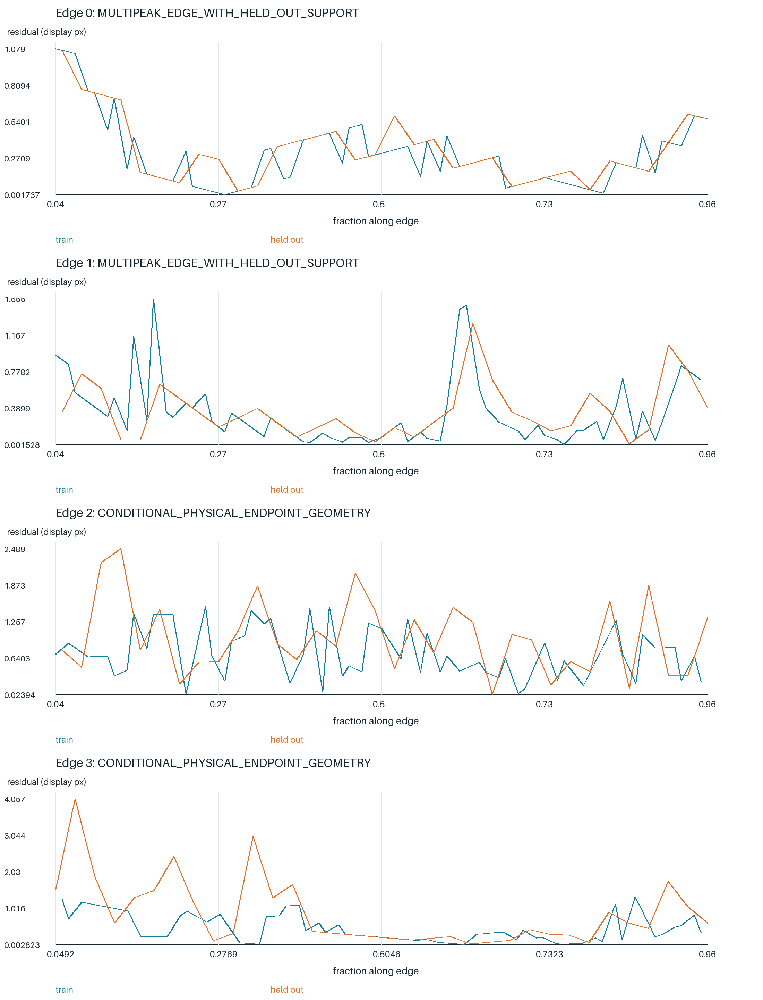
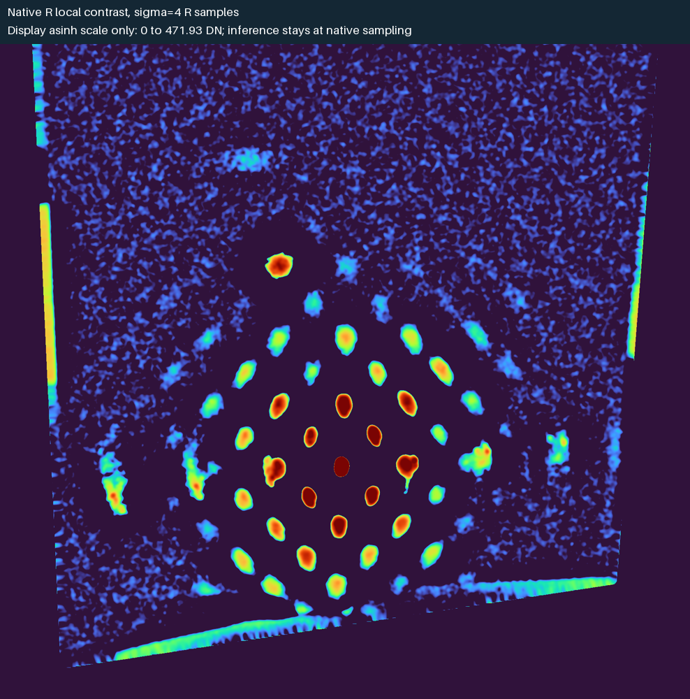
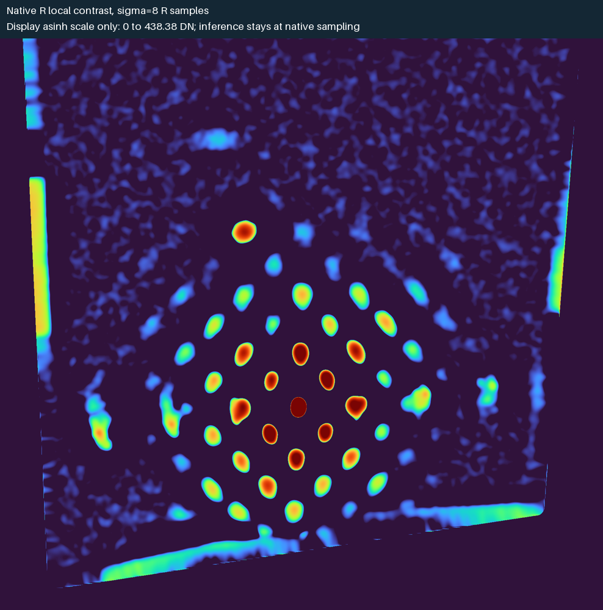
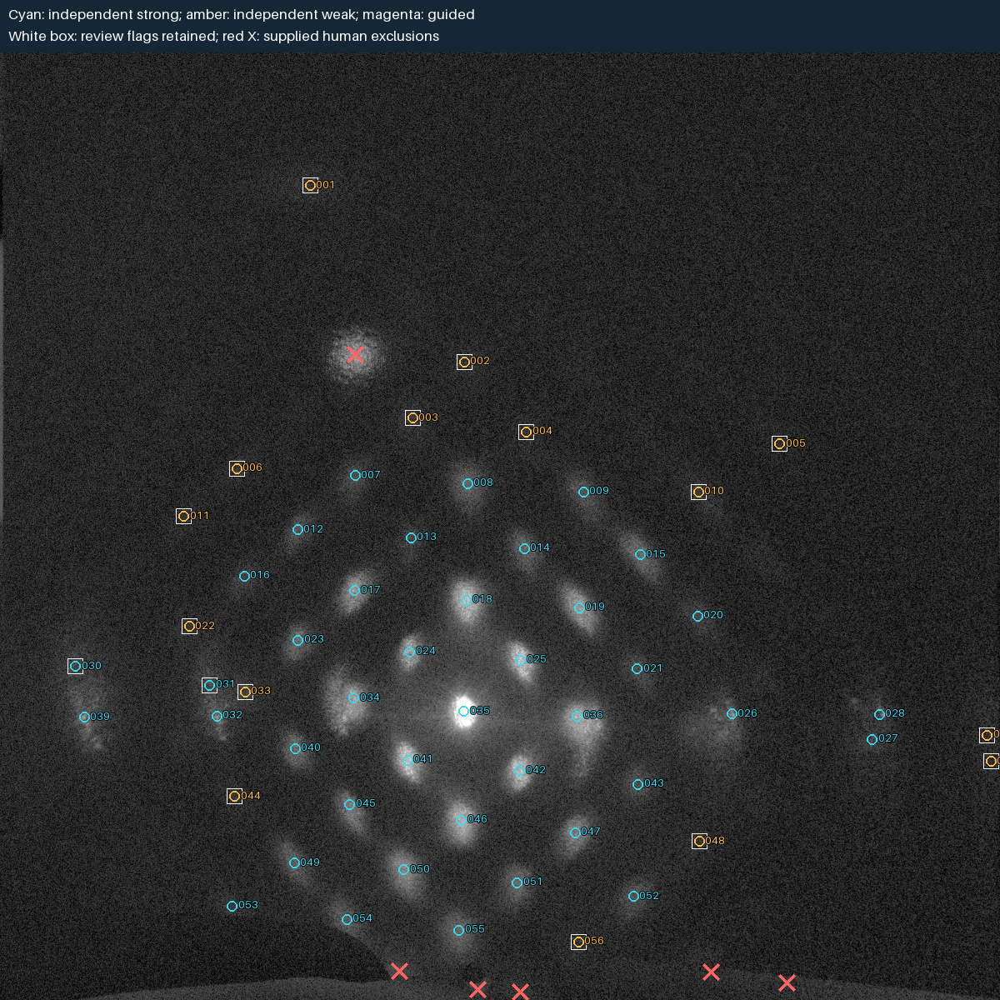
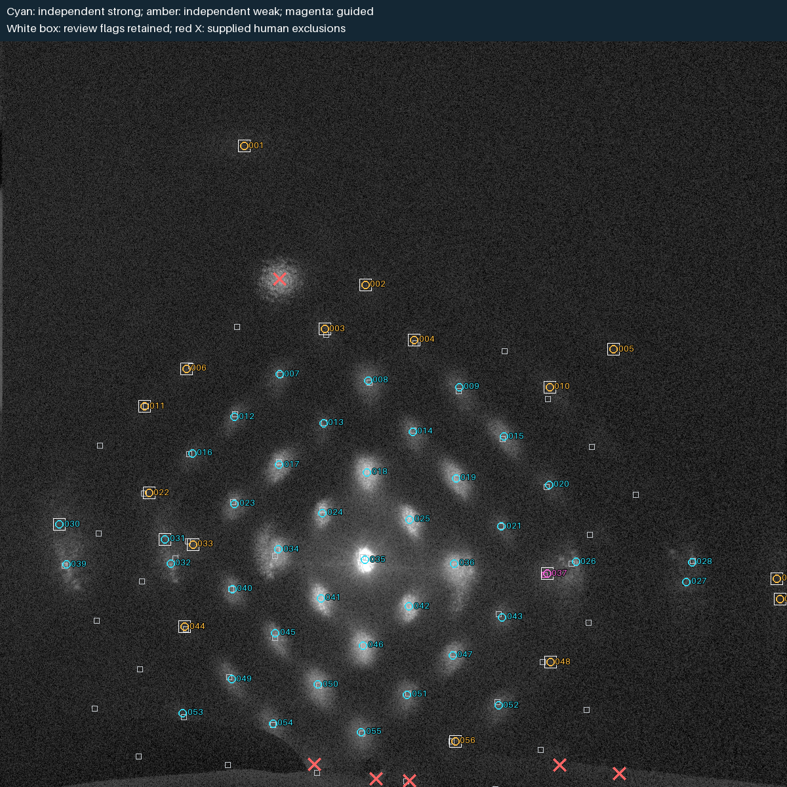
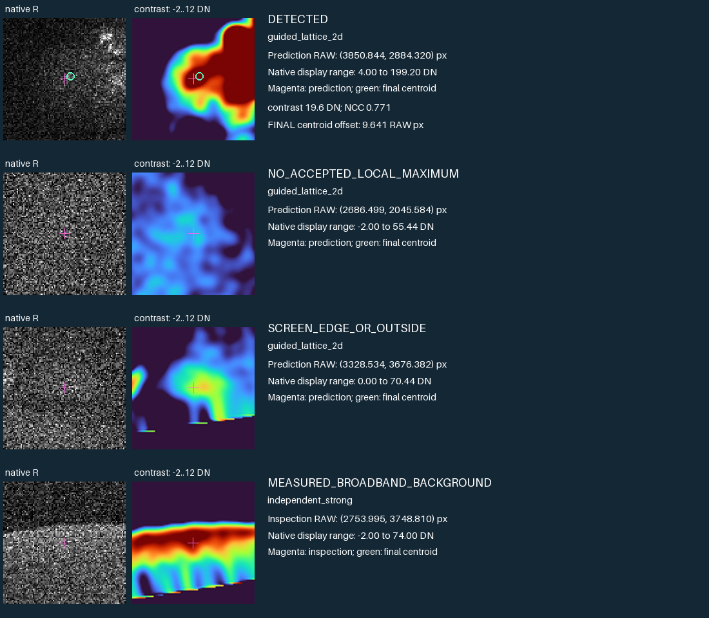

全204帧候选最多；丰富二维弱点与亮横族，上方激光虚像及边缘非光学信号需要排除；本帧几何引导实际新增1个，不能自动把全部格点填满。
真实原生CFA平面重新计算。5.67 V，up；完整RAW 7028×4688，R平面 3514×2344。
| 强候选 | 独立弱候选 | 几何补检 | 算法待复核 | 有任意质量标志 | 输入的人审排除 |
|---|---|---|---|---|---|
| 40 | 15 | 1 | 17 | 18 | 6 |
既有人审口径：本帧56个候选均已逐项复核；其中24个仍受低信噪比、浅鞍点、光翼或边缘混合限制，逐项原因随表保存。已核对本轮原图、正视标记与峰区对位；未将质量限制改写为已确认独立衍射峰。 原人审结论表。本次算法标记数与人审限制数不是同一口径；坐标回归通过不表示这些物理身份问题已解决。
红叉为已绑定RAW身份的人审非光学位置；算法自动宽带背景抑制、近邻分辨和训练隔离另有逐项审计。候选数不代表独立物理级次。坐标表 · 完整搜索与拒绝证据 · 屏边证据




| 几何族 | 状态 | 留一最大误差/间距 | 允许预测 |
|---|---|---|---|
| 二维点阵 | 可拟合 | 0.0829139 | 是 |
| 横向峰列 | 可拟合 | 0.156181 | 是 |
本协议的条件留一误差/间距门槛为 0.2。只有通过该门控的族才进入预测搜索。


所有搜索、训练和质心来自输入像素；历史坐标只在计算结束后用于回归比较，不作为识别输入。正视图经过显示映射与插值，不作为测光数据。